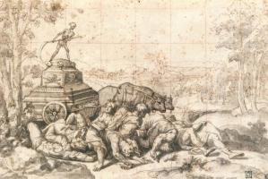

| Свята родина
1540
|
|  | Тріумф Смерті
1540-42
|
 | Суд Соломона
1552
|
 | Свята Цецилія
1569
|
 | Мученицька смерть святого Севастіана
1575
|
 | Благовіщення
1580
|
 | Обрізання Христа
1580
|
 | Тортури Святого Георгія
1580
|
 | Вигнання Агарі
|
 | Вбивство Авеля
|
 | Первородний гріх
|
 | Автопортрет як святий Георгій
|
 | Давид і Голіаф
|